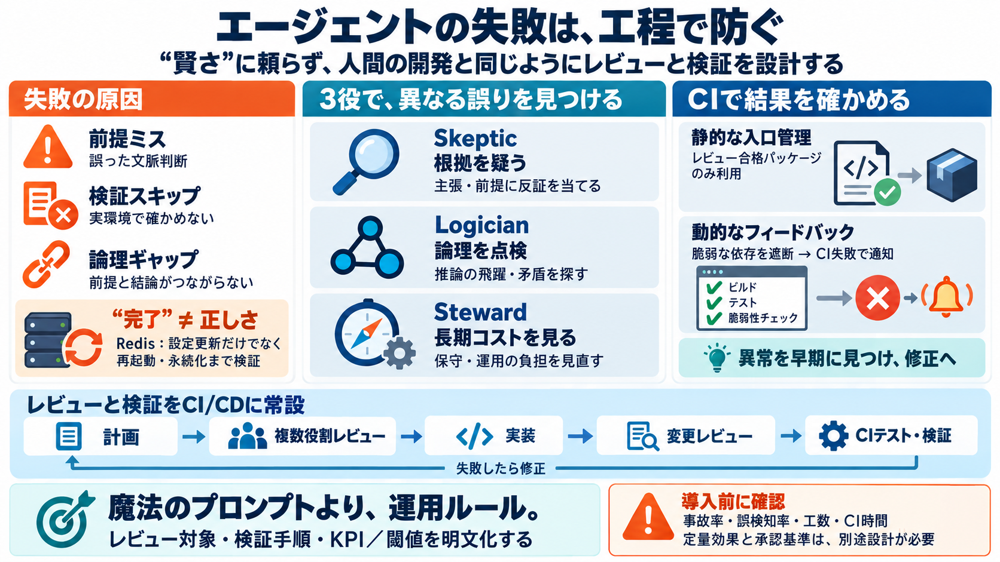

5 AI Agent Workflows to Explore in 2026 | Vishakha Sadhwani posted on the topic | LinkedIn
own tools, context, and reasoning. → Example: Research sub-agents, code review agents - Why this matters: → Purpose-Buil…

レビューで事故を潰す
AIコーディング“エージェント”を、賢さの自動化ではなく「人間の開発プロセス」として設計し、検証とレビューで継続デリバリーへ落とし込みます。
なぜ失敗するか
エージェントの失敗は、知識不足より「前提の誤り」「検証の抜け」「論理の飛躍」のようなソフトウェア開発の典型事故として現れます（再現性が高い原因）。
AIは開発者と同じ
エージェントは与えられた文脈の範囲で動き、人間のようにミスをします。だから対策は魔法プロンプトではなく、変更管理・複数観点レビュー・CI検証で組み立てます。
3役でレビューを分解
複数の役割を持つエージェントでレビュー観点を分離します。誤りの“種類”ごとに検出できる場所を増やし、単一担当依存を減らします。
CI/CDに埋め込む
実運用の流れ（計画→複数レビュー→実装→変更レビュー（検証）→CIテスト・バリデーション）に、分業エージェントのレビューを組み込みます。
検証抜けの典型
Redisの例では設定更新を確認しても再起動検証を怠り、ディスク永続化の問題が残りました。エージェントの完了宣言だけでは不十分です。
静的安心→動的フィードバック
Greenflaggedは、レビューを通過したパッケージだけを配信し、脆弱性があれば依存関係を排除してCIを壊すことで早期に異常へ気づかせます。
リスクを分類して潰す
誤りは別系統のリスクです。役割分担により「何が間違っているか」をレビュー観点として分離し、検出される場所を増やします。
そのまま真似るな
記事には事故率低下・誤検知率・導入コスト・CI所要時間などの定量指標や、Greenflaggedのレビュー基準（静的解析やポリシー）が十分には書かれていません。
移植するなら設計が要る
「エージェントは与えられた文脈でしか疑えない」前提を踏まえ、レビュー対象の定義・検証手順・閾値・KPIまで運用に落とし込む必要があります。
結論
エージェントの失敗は“開発者のミス”として扱える。複数役割レビューとCI検証、さらにGreenflaggedのような動的フィードバックで、事故を早期に顕在化させ修正へ誘導します。
own tools, context, and reasoning. → Example: Research sub-agents, code review agents - Why this matters: → Purpose-Buil…
One of the most important changes in 2026 is the shift in how developers interact with AI. The old model was: Develope…
A code review AI agent is an autonomous software system that reviews pull requests, identifies bugs, security vulnerabil…
Press enter or click to view image in full size Image 4 AI Generated Image That is why the interesting part of agent …
Nov16-20,2026 QCon San Francisco What's working across AI, architecture, and leadership, from the teams doing it. R…